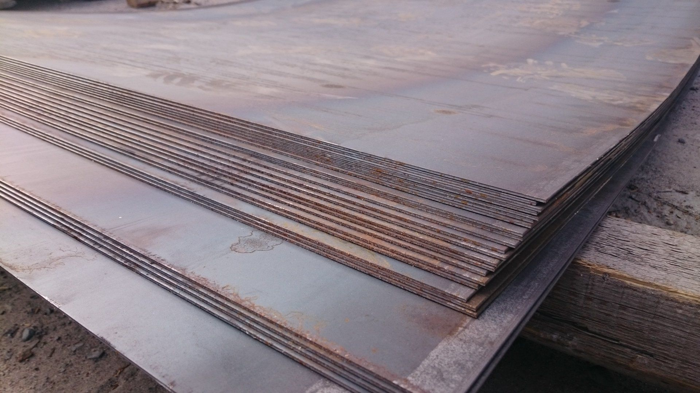
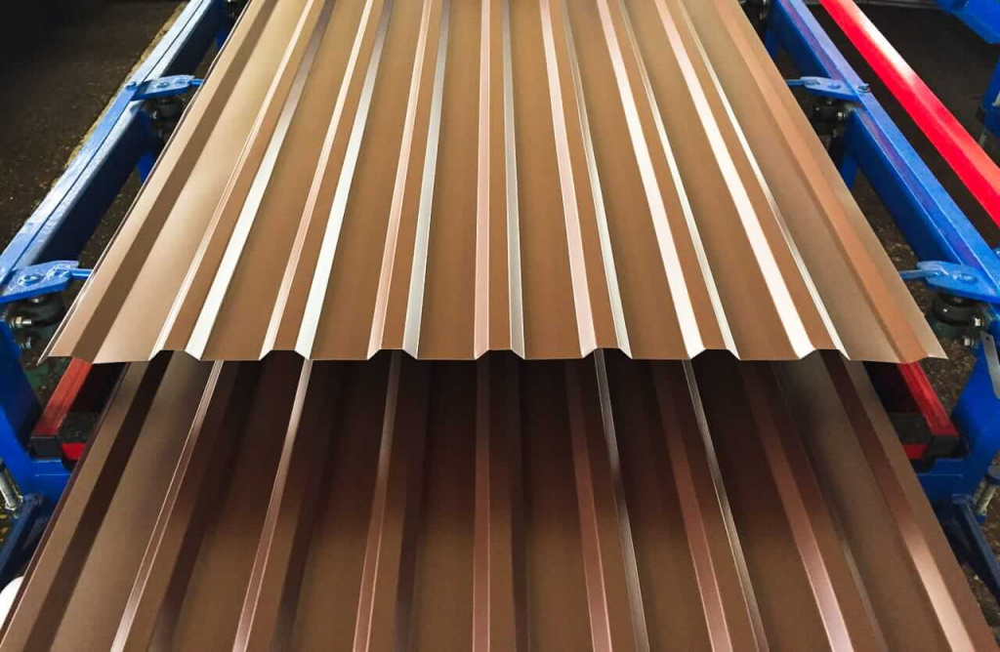
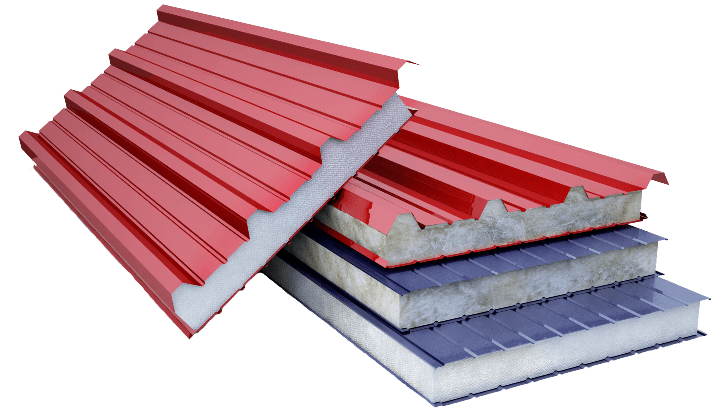
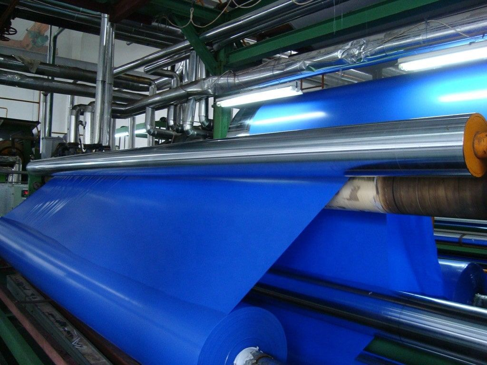
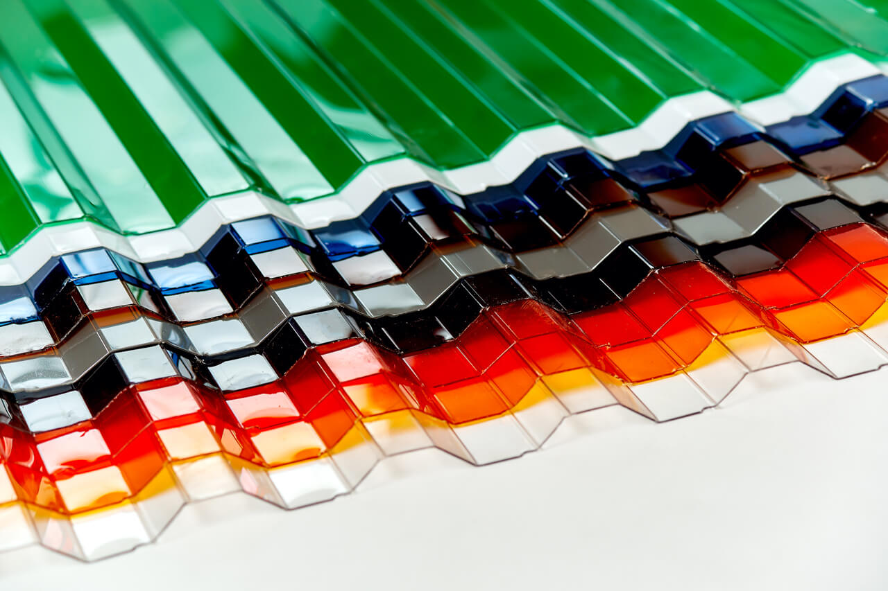
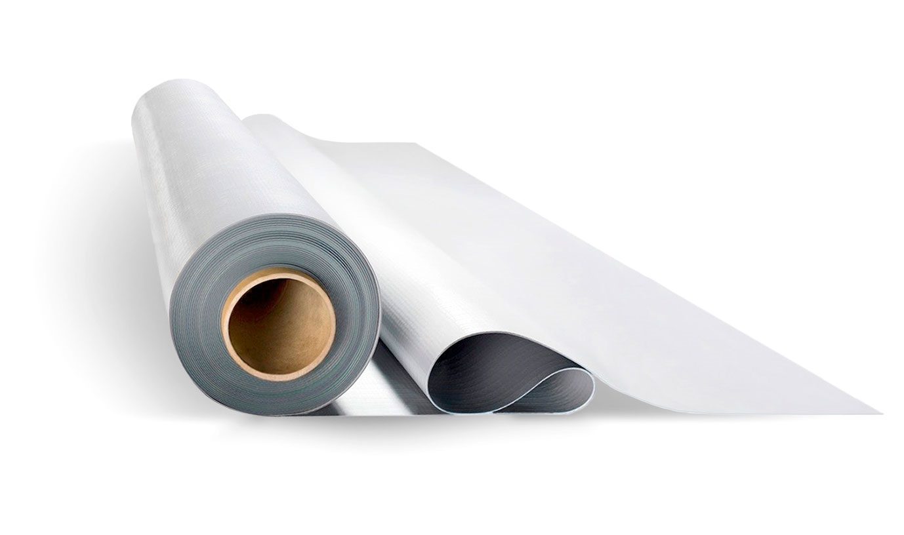
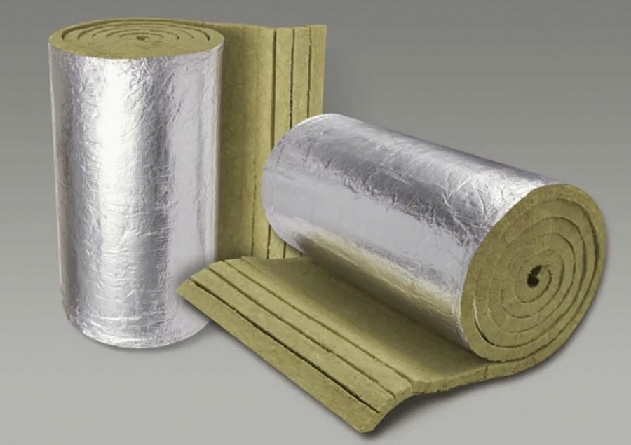

|
| СТАЛЬ
 |
Данный материал является основой для каркасов и несущих конструкций
наших ангаров. Мы используем сталь с оцинкованным или полимерным покрытием, что обеспечивает
высокую коррозионную стойкость и долговечность. Прочность и
надёжность стали позволяют создавать конструкции больших пролётов без дополнительных опор.
Доступные марки стали: АСТ3, 09Г2С, 30ХГСА, Ст3, Ст3сп5, 09Г2С.
Доступные варианты
толщины металла: 1.0 мм, 1.2 мм, 1.5 мм, 2.0 мм, 2.5 мм.
Тип покрытия: горячее цинкование,
порошковая окраска, полимерное. |
|
|
|
| ПРОФНАСТИЛ
 |
Данный материал используется для обшивки стен и кровли ангаров.
Он сочетает в себе лёгкость, механическую прочность и эстетичный внешний вид.
Профнастил отлично противостоит ветровым и снеговым нагрузкам, а разнообразие
цветов позволяет гармонично вписать объект в окружающую среду.
Толщина листа: 0.4 мм, 0.45 мм, 0.5 мм, 0.7 мм.
Высота профиля: от 5 до 20 мм.
Покрытие: оцинкованное, с полимерным слоем.
|
|
|
|
| СЭНДВИЧ-ПАНЕЛИ
 |
Свойства данного материала варьируются в зависимости
от марки и наполнителя. Материал отличается высокими теплоизоляционными
характеристиками, скоростью монтажа и долговечностью. При выборе следует
отталкиваться от предназначения будущего ангара – для утеплённых помещений или холодных складов.
Толщина панелей: от 50 до 200 мм.
Наполнитель: минеральная вата, пенополистирол, пенополиуретан.
|
|
|
|
| ТЕНТОВАЯ ТКАНЬ
 |
Данный материал примечателен своей доступной ценой и отличными
гидроизоляционными свойствами. Он устойчив к ультрафиолету, перепадам температур
и механическим повреждениям. Идеален для временных и сезонных сооружений.
Плотность: от 650 до 1200 г/м^2.
Цвета: синий, зелёный, белый, серый.
|
|
|
|
| ПОЛИКАРБОНАТ
 |
Прочный, лёгкий и светопрозрачный материал, часто используется в различных отраслях
промышленности и сельского хозяйства. Обладает высокой
ударной прочностью и устойчивостью к погодным условиям.
Толщина: от 4 до 16 мм.
Структура: сотовый или монолитный.
|
|
|
|
| ПВХ-МЕМБРАНЫ
 |
Данный материал является современным решением для гидроизоляции
кровли ангаров. Он отличается высокой эластичностью, прочностью
на разрыв и длительным сроком службы. ПВХ-мембрана устойчива к ультрафиолету,
перепадам температур и агрессивным средам, что делает её идеальным выбором для плоских и скатных крыш.
Толщина: от 1.2 до 2.0 мм.
|
|
|
|
| УТЕПЛИТЕЛИ И ГИДРОИЗОЛЯЦИЯ
 |
Дополнительные материалы для улучшения теплотехнических и влагозащитных свойств ангара.
Включают в себя рулонные и плитные утеплители, мембраны и плёнки. Мы подбираем утеплитель
в зависимости от назначения объекта, раположения объекта и бюджета проекта.
Виды: базальтовая вата, пенопласт, ППУ, изоспан.
|
|
|